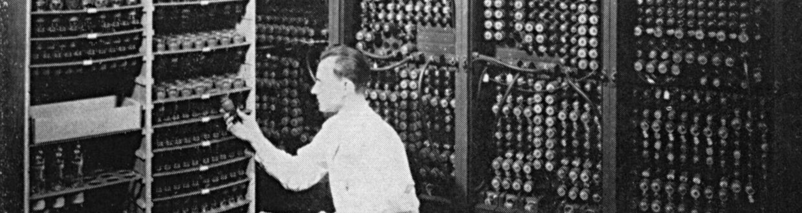

Di masa sekarang, banyak dari kita mengeluh kalau laptop kita agak hangat saat membuka banyak tab, apalagi di browser Chrome. Tapi, pada tahun 1940-an, jika kita menyalakan komputer, lampu-lampu di satu blok kota bisa aja meredup karena beban listrik yang sangat besar, dan panas yang dihasilkan bisa membuat ruangan terasa seperti sauna.
Selamat datang di era Generasi Pertama, titik awal di mana ambisi manusia untuk menghitung lebih cepat mulai terwujud melalui mesin elektronik.
Dua tokoh utama di balik ENIAC, komputer elektronik serbaguna pertama di dunia. Mereka juga menciptakan UNIVAC, komputer komersial pertama yang sukses.
Ilmuwan jenius yang mencetuskan Arsitektur Von Neumann. Konsep ini memisahkan memori untuk menyimpan data dan instruksi, yang sampai detik ini masih dipakai di hampir semua komputer modern.
Komponen utama dari generasi ini adalah Tabung Vakum. Bentuknya mirip bohlam lampu pijar kuno. Buat apa? Buat jadi saklar elektronik yang mengatur aliran data dalam bentuk sinyal listrik.
Di generasi 1 ini, tabung vakum sering kali memunculkan 2 masalah utama, yaitu masalah ukuran dan masalah thermal (basically panas).
Karena sebuah komputer membutuhkan puluhan ribu tabung ini, ukuran komputer menjadi sangat masif.
Tabung vakum menghasilkan panas yang luar biasa. Kalau satu saja tabung terbakar (dan ini terjadi hampir setiap hari), seluruh sistem bisa berhenti bekerja. Teknisi harus berlarian di dalam mesin untuk mencari tabung mana yang mati.
Jangan harap ada Windows, macOS, ataupun Linux di sini. Komputer generasi pertama hanya mengerti bahasa mesin (machine langauge).
ENIAC merupakan raksasa elektronik pertama yang memiliki berat 30 ton dan menggunakan lebih dari 17.000 tabung vakum untuk beroperasi. Karena ukurannya yang masif, komputer ini membutuhkan satu ruangan besar dan daya listrik yang sangat tinggi hingga sanggup meredupkan lampu di wilayah sekitarnya.
Awalnya dibangun untuk militer AS, ENIAC bertugas menghitung tabel lintasan peluru dengan kecepatan yang jauh melampaui kemampuan manusia. Meskipun masih menggunakan kabel manual yang rumit untuk memprogramnya, mesin ini menjadi bukti pertama bahwa komputer elektronik bisa bekerja secara otomatis.
Setelah ENIAC, muncul UNIVAC I (Universal Automatic Computer I). Ini adalah komputer pertama yang diproduksi secara komersial untuk kebutuhan sensus penduduk dan bisnis. Namanya meledak ketika UNIVAC berhasil memprediksi hasil Pemilihan Presiden AS tahun 1952 dengan sangat akurat, sesuatu yang membuat masyarakat umum mulai sadar bahwa "otak elektronik" akan mengubah dunia.
Generasi pertama memang lambat, panas, dan sering rusak, tapi tanpa raksasa-raksasa ini, kita tidak akan pernah mengenal teknologi digital. Mereka membuktikan bahwa logika matematika bisa dieksekusi secara elektronik.